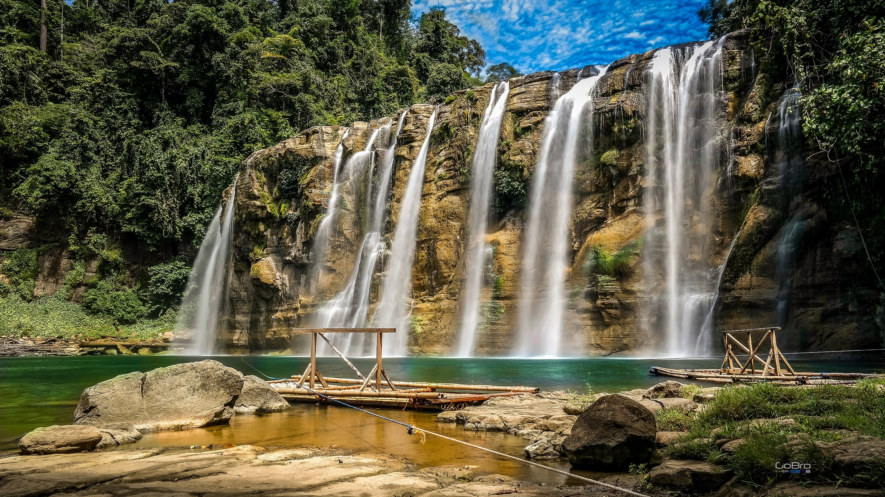
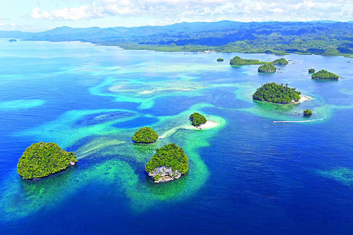
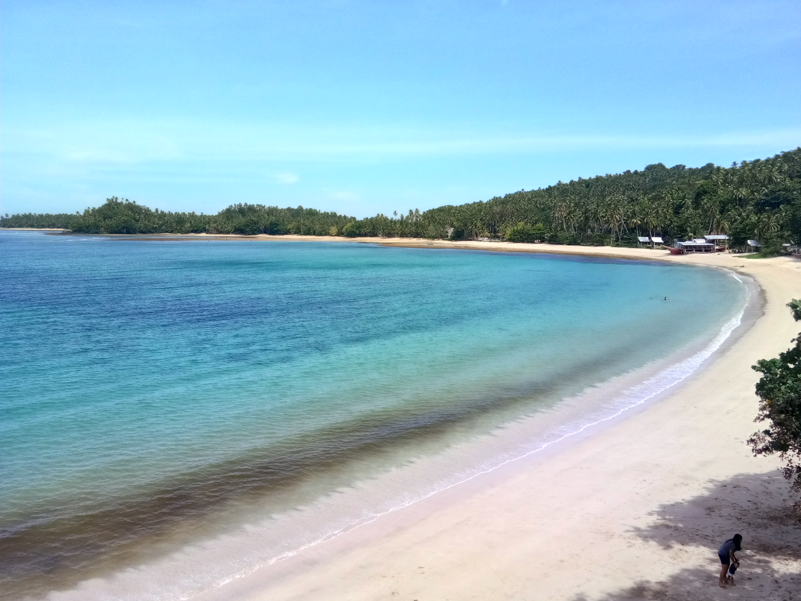
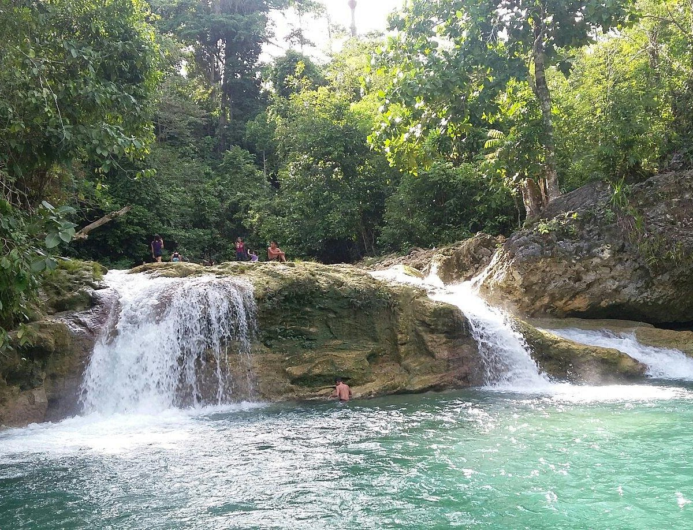
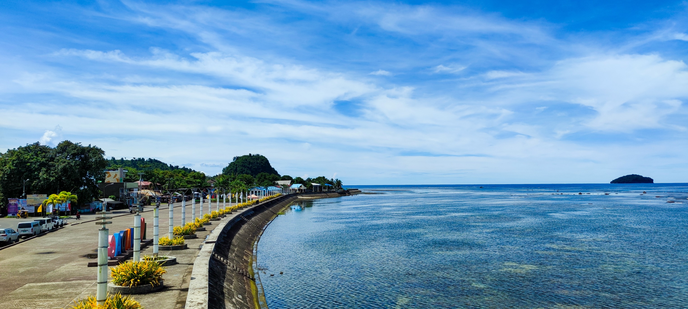
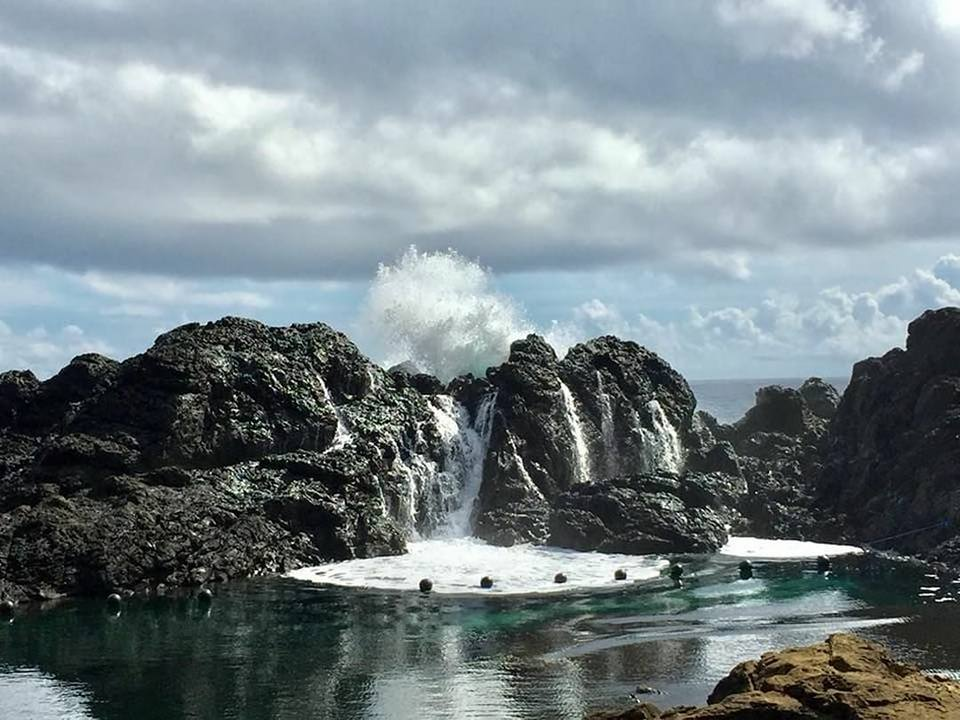

<< Home Page
Welcome to Surigao del Sur! 🌍 Prepare to embark on a journey filled with captivating sights, rich culture, and unforgettable experiences. Whether you're a history enthusiast, a nature lover, or a food adventurer, our destination has something special for everyone. Let the exploration begin!
Happy travels!
Tinuy-an Falls

Tinuy-an Falls also referred to as the "Niagara Falls of the Philippines" is a multi-tiered waterfall in Bislig, Surigao del Sur in the southern island of Mindanao, Philippines. Tinuy-an is a white-water curtain that flows in three levels and is said to be the widest waterfall in the Philippines.
Enchanted River

Enchanted River is a deep spring river famous for its clear, blue-green waters. It is a flawless saltwater river located in Hinatuan that flows into the Pacific Ocean which is around 80-feet deep, and just barely long enough to be considered a river, yet the flow attracts visitors from around the world who want to experience the beautiful waters.
Britania Group of Islands

Britania Group of Islands is located in Brgy. Britania in San Agustin, Surigao del Sur. It is a cluster island which comprised of 24 islands and islets that offer pristine white sand beaches and clear turquoise waters. Most of these islands are uninhabited and only a few of them have a beach. This group of islands in Surigao del Sur is best visited during the summer months, from March to May.
Cagwait White Beach

Cagwait White Beach is a locals' favorite place in Surigao del Sur which is situated in the Municipality of Cagwait. It has earned the nickname "Little Boracay of Caraga" because of its unique crescent-shaped white sand beach woven by the harmonious composition of nature of tropical settings stretching the aquamarine water.
Bao-Bao Falls

Bao-Bao Falls is an untouched shallow waterfall found in Diatogon, Lianga, Surigao del Sur. Bao-Bao falls has not yet been visited by many people but it is a jade-colored and clear cold waterfalls coming from the deep mountains of tropical rainforest
Tandag City Boulevard

Take a stroll down Tandag City Boulevard. This seaside walkway is the ideal place to take in breathtaking sunset views. It is graced with a breathtaking panoramic view of the Philippine Sea and the vast expanse of the Pacific Ocean. But Tandag City Boulevard is not just a feast for the eyes; it’s a culinary journey for the senses. The vibrant local food scene is a testament to the city’s rich culture and traditions.
Laswitan Lagoon

Laswitan comes from the Visaya word, laswit , meaning the sea water pounding on the rocks. This Lagoon is located in Cortes, Surigao del Sur. During high tide, sea water gushes over the rocky walls, creating a waterfall-like effect. Laswitan is unique because of the strong waves crashing on a 20-foot rocky sea wall and spilling over the other side to fill up a rock pool.